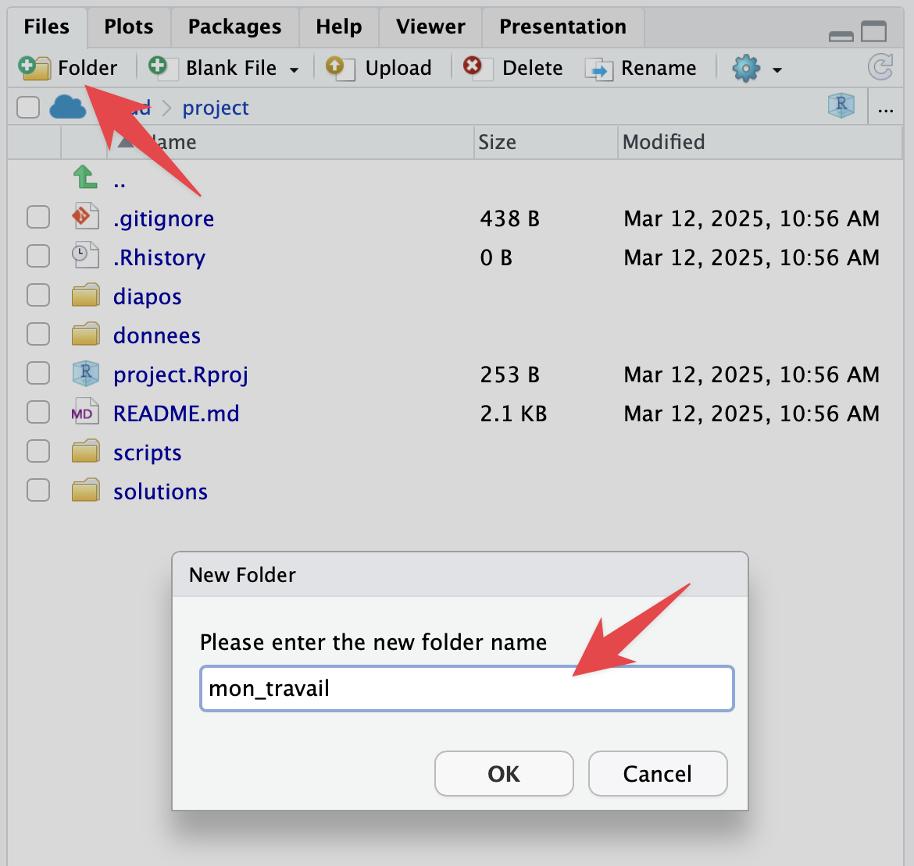
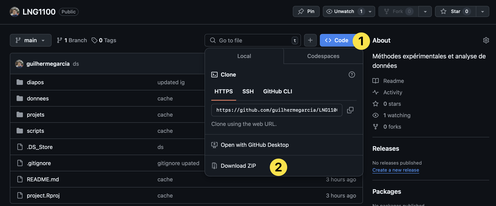
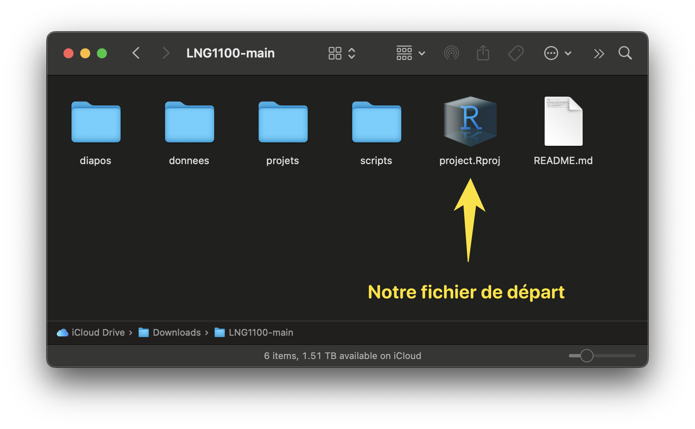

1 Préparez-vous
Lisez attentivement ce chapitre pour vous assurer que vous serez prêt à commencer le cours.
1.1 Vos options pour le cours
Pendant le cours, on utilisera le langage R. Plus spécifiquement, on utilisera le logiciel RStudio, un environnement de développement . Les deux outils sont gratuits. Il s’agit donc de deux outils différents : il faut avoir R pour utiliser RStudio.
Vous avez deux options pour vous préparer, et je vous suggère de choisir les deux. Ce sont des options complémentaires.
1.1.1 Option A : Posit cloud (en ligne)
L’option la plus facile pour suivre le cours sera d’utiliser la version en ligne de RStudio. Allez sur https://posit.cloud pour créer votre compte et voilà. L’avantage est claire : vous n’avez pas besoin d’installer ni R ni RStudio; vous n’aurez pas de problèmes techniques dans l’installation des extensions utilisées dans le cours; et vous n’aurez pas de difficultés avec votre système de exploitation. Toutefois, vous avez une limite de 25 heures par mois, vu que vous utilisez les serveurs de Posit. En plus, c’est en ligne… Par conséquent, si le réseau est instable, vous risquez de rencontrer des problèmes. Voilà pourquoi il est utile de considérer aussi l’option B.
1.1.2 Option B : installer R + RStudio (hors ligne)
Cliquez ici pour installer R et RStudio. Il faut installer R avant d’installer RStudio. Si vous utilisez un Mac, il faut s’assurer que vous avez complété correctement l’installation. Veuillez noter que, si votre système d’exploitation est trop ancien, il se peut que vous ne puissiez pas installer les outils (donc, utilisez juste la version en ligne).
Utilisez toujours la version en ligne, mais installez R et RStudio aussi pour pratiquer chez vous et pour ne pas utiliser votre limite de temps en ligne.
1.2 Ouvrez RStudio
Lorsque vous avez créé votre compte sur http://posit.cloud, vous verrez Your Workspace et vous pourrez créer votre premier projet en cliquant sur New Project et New RStudio Project. Dans la version hors ligne, vous n’avez pas besoin de créer un projet pour examiner l’interface du logiciel, qui sera identique dans les deux versions. Voici ce que vous verrez :
{kind=link}
Dans la capture d’écran ci-dessus, vous voyez trois grandes zones :
- La Console nous permet d’interagir avec le langage de façon immédiate. Le Terminal est dans le deuxième onglet de cette zone
- L’onglet Files est maintenant actif dans la zone 2. Il nous montre les fichiers dans notre répertoire, qui est vide maintenant.
- L’onglet Environment liste les variables et les objets créés.
1.3 Quelques suggestions
Voici quelques modifications suggérées. Vous pouvez cliquer sur les captures d’écran ci-dessous pour les agrandir. On va modifier quelques éléments dans RStudio (peu importe si vous choisissez la version en ligne ou hors ligne). Pour ouvrir les réglages du système, allez à Tools > Global Options....
{kind=link}
{kind=link}
{kind=link}
1.4 Installer tidyverse
Après avoir créé votre compte sur http://posit.cloud, et après avoir installé R et RStudio, ouvrez RStudio pour installer l’extension tidyverse : tapez install.packages("tidyverse") Entrée dans la console. Vous devez suivre la même étape dans la version en ligne et hors ligne, vu que les deux ne sont pas connectées l’une à l’autre. L’installation peut être problématique selon votre système d’exploitation. Si vous avez des problèmes, consultez le chapitre sur des problèmes techniques, utilisez Google/GPT/Gemini/etc. Si vous n’êtes pas capable d’installer l’extension, priorisez la version en ligne (où l’installation sera facile). Il ne sera pas possible de suivre le cours sans avoir installé tidyverse.
Consultez les matériels sur monPortail et lisez le chapitre 6 de Barnier (2023) ici pour plus des détails.
{kind=link}
tidyverse1.5 Synthèse
Voici les étapes que vous devriez avoir accomplies jusqu’à présent (et qui seront essentielles pour suivre le cours). Assurez-vous que toutes ces étapes soient complétées avant de continuer.
- Installer R et RStudio et créer un compte sur https://posit.cloud
- Ajuster les réglages du RStudio
- Créer un projet RStudio à partir d’un dépôt Git
- Installer
tidyverse
1.2.1 Comment télécharger mettre à jour vos fichiers
Vous devez simplement suivre les étapes suivantes :
New ProjectNew Project from Git Repositoryet collezhttps://github.com/guilhermegarcia/LNG1100.gitmon_travail. C’est dans ce dossier que vous ajouterez vos fichiers et toutes vos annotations.Pendant notre cours, je modifierai et j’ajouterai des fichiers dans notre projet. Chaque fois que vous voulez mettre à jour les fichiers, utilisez les commandes suivantes dans le Terminal :
git fetch originEntréegit reset --hard origin/mainEntrée
1.2.1.1 Version hors ligne
Allez sur le dépôt Git du cours et téléchargez tous les fichiers (cliquez sur la figure ci-dessous). Ensuite, placez le dossier téléchargez dans un répertoire logique dans votre ordinateur (peut-être vous avez déjà un grand dossier avec tous les dossiers de vos cours).

Explorez le dossier téléchargé pour vous assurez que le fichier
project.RProjest là. Cliquez toujours sur ce fichier pour ouvrir RStudio dans ce cours!